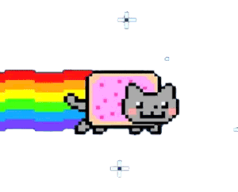
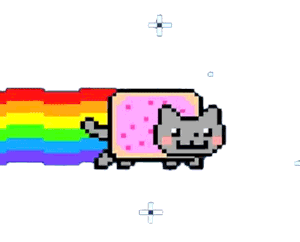

The viral Internet jokes known as memes (Lolcats, double rainbows) are getting their own agents and brand managers.
A scruffy, twentysomething man in a cardigan walks down the street, trailed by Sergio Flores, aka Sexy Sax Man, belting out a grinding tune. Cardigan guy passes someone “planking” atop a fire hydrant, someone else doing “the worm” along the sidewalk, and cats with limes on their heads, before Flores gets plowed over by an antelope, and our hero rides off on the beast through a crowd of dancing prisoners in orange jumpsuits into a sunset of animated, Pop-Tart cats making double rainbows in the sky.
To those who don’t spend enough quality time on such sites as YouTube or Reddit, the above scene might sound like a fever dream. In fact, it’s a television spot for VitaminWater that combines a number of popular Internet memes. The term is derived from genetics, describing the evolution of ideas and cultural phenomena by natural selection. These days, meme is the catchall for freely copied and altered tidbits of amusing online content, from animations and photo captions to viral videos that inspire a flood of parodies. (Think Honey Badger or Shit Girls Say.)
Within weeks, most fade to oblivion, but those with endurance make the leap to the commercial world. Properly exploited, some memes can bring in anywhere from a few thousand dollars for a single licensed broadcast of a popular video to six figures for an integrated marketing campaign based around a meme. “These things … are the new Mickey Mouse or Bart Simpson,” says Ben Lashes, a former musician based in Portland, Oregon, who manages popular memes such as Keyboard Cat (a piano-playing feline), Nyan Cat (the above-mentioned Pop-Tart/cat hybrid), and Scumbag Steve (a photo of a sleazy-looking man whose real name is Blake Boston).
In the past two years, Lashes has helped clients license memes to brands such as Nike, Nokia, Wonderful Pistachios, and Lipton Brisk Iced Tea, which uses the Scumbag Steve photo in a new Web ad. Lashes and Nyan Cat creator Chris Torres just signed with Jakks Pacific, which makes Hello Kitty, among other toys, to license plush versions of Torres’s creation this fall. These are “not just dumb things on the Internet,” says Lashes. “These are the next huge pop culture characters.”
Viral Spiral, a year-old London company, employs a team of researchers to scour YouTube, blogs, and other dark corners of the Web around the clock, looking to sign a video’s creator before his work takes off. “We represent over a thousand videos,” says Chief Executive Officer Damian Collier, a British theater, television, and music producer who has also worked in law and finance. The company’s first client was the originator of the 2007 video Charlie Bit My Finger (British baby chomps on his older brother’s digit), the most watched YouTube video, with more than 400 million views. Viral Spiral has gone on to represent such recent hits as the Double Rainbow guy (nature lover gets hilariously emotional) and Isaac’s Lip-Dub Proposal (man surprises his beloved with an elaborately choreographed musical proposal). The agency manages the revenue a video brings in from YouTube’s embedded ads—Charlie Bit My Finger has earned the boys’ family about $500,000, according to ABC’s Nightline—and sells its broadcast rights to news programs. It also pitches viral videos for use in major campaigns and has placed them in ads for Coca-Cola, Sony, Google, and others. “We handle legitimate licensing from our clients,” says Collier. “We negotiate, handle fees, do contracts, and make sure they get paid.”
The services Lashes and Viral Spiral offer may seem excessive for such ephemeral content, but as brands take greater notice of the attention Internet memes can generate, viral content is often commercialized without credit or compensation. Lashes and his lawyer regularly confront brands that use his clients’ memes without permission. “If I did not have Ben … on my side, Nyan Cat probably wouldn’t be doing as well as it is right now and many people would be profiting off my work,” says creator Torres.
During the 2012 Canadian broadcast of the Super Bowl, a Budweiser spot aired that showed an Ontario minor league hockey game instantly transformed into something worthy of the National Hockey League, with screaming fans, professional announcers, and a chicken mascot. It was singled out by several media writers as the most original Super Bowl ad of the year, a call that rankled Charlie Todd.
Todd is the founder of Improv Everywhere, a group known for orchestrating large-scale stunts, including the annual No Pants Subway Ride in Manhattan. In 2008, Improv Everywhere made a video called Best Game Ever, where hundreds of people swarmed a minor league ballgame. Even though Todd says the Bud ad was practically identical to his original effort, neither Budweiser nor its agency gave any props to Improv Everywhere. (Budweiser Canada says they were inspired by fans.)
“This has happened hundreds of times,” says Todd resignedly, noting that a cell-phone company in Europe had previously copied Best Game Ever for its own commercial. “Since 2009, it’s been pretty routine to see things done in our style and things repurposed that are so similar.”
Todd’s feelings are mixed, since the strength of his videos lies in the ability of others to turn his pranks into a meme by emulating them. “If you want to go start your own group … and mention you got [the idea] from us, I’m fine with that,” Todd says. “But it starts crossing the line when people start doing it for promotional purposes.”
Memes are a tremendous asset for brands because, like celebrities, they have an audience that recognizes and appreciates them. “You as the person who created something are not the most valuable person on the chain,” says Ben Huh, CEO of Cheezburger, a network of websites that includes Know Your Meme and I Can Haz Cheezburger, a site that parlayed the Lolcat meme (cat pictures with funny, misspelled captions) into a multimillion-dollar content network. “The MVPs are the people who change it, appropriate it, and turn it into something greater.”
Occasionally, an ad campaign will succeed in generating its own meme, which in turn can be copied by rival advertisers. “There’s a difference between ripping off and riffing off,” says Renny Gleeson, global director for interactive strategies at Wieden + Kennedy, the Portland ad firm that created the Old Spice ads, the best example of a commercial that went viral and became a widespread meme. The ads’ concept (studly spokesman walks through a series of surrealistic, impossibly manly scenarios) spawned several copycat ads, from Cisco to Dollar Shave Club. Gleeson welcomes the appropriation: “It’s an acknowledgment that you’ve accomplished something.”
For the originator of a meme, legal protections are slim, and that’s the way it should be, says copyright attorney Anthony Falzone, executive director of the Fair Use Project at Stanford Law School. “If you’re the first person to do the video S- -t Girls Say, that doesn’t mean someone else can’t use the same idea with girls saying different stuff,” he says. “Just because you’re the first one to do something doesn’t mean you should be the only one to get to do it.”
At Viral Spiral, Collier and his team protect only against the unauthorized use of images and sound from clients’ videos (covered under copyright law) and only at clients’ request. Lashes, meanwhile, will ink a licensing deal on two conditions. Rule One: It has to be cool. “When you create a meme, a lot of sharks in the water smell blood,” he says. “Once they use you, they can take advantage and kill the meme. I’ll never do that.” Rule Two: “It’s got to pay some bills.”

 
